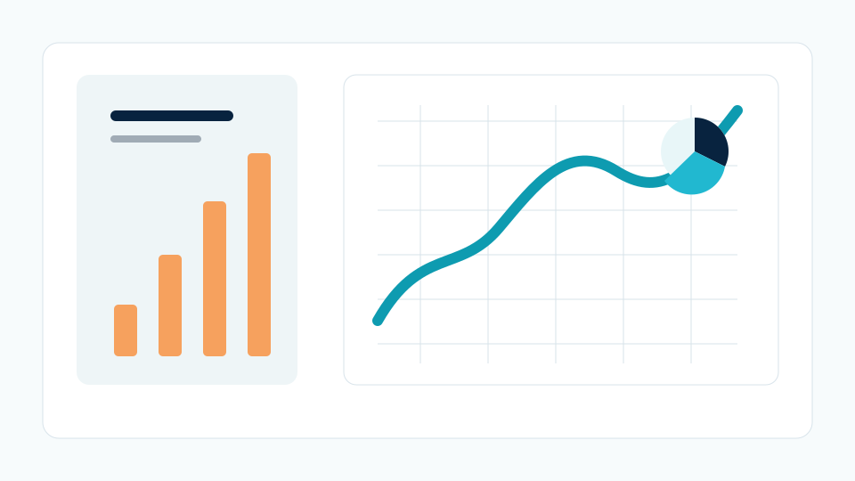
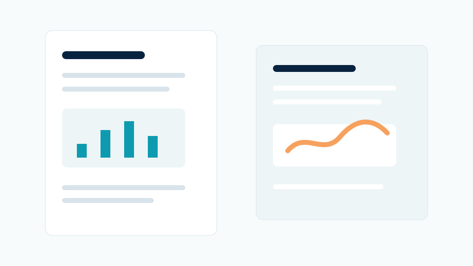

Review the files
Check the dataset, research questions, required method, deadline and expected report format before confirming scope.
This anonymised sample shows how MAFUBAM handles data cleaning, analysis planning, chart preparation and result explanation for research work without exposing private datasets or client material.

Many research projects reach the analysis stage with useful data but weak presentation. Column names may be inconsistent, missing values may be unclear, charts may not match the research questions, and results may be difficult to explain in plain language.
The goal here is not to decorate charts. The goal is to help the client move from raw material to defensible outputs: cleaned tables, suitable analysis, readable visuals and short notes that explain what each result means.
Check the dataset, research questions, required method, deadline and expected report format before confirming scope.
Organise variables, remove obvious duplicates, flag missing values and prepare analysis-ready tables.
Run agreed descriptive, statistical or model-based outputs and check that each output answers a real question.
Prepare charts, summary tables and concise interpretation notes for Word, PDF or presentation use.
A clearer working dataset with labelled columns, organised records and issues highlighted for review.
Tables arranged around the research questions instead of random tool output dumps.
Readable visuals suitable for report chapters, appendices or defence slides.
Short explanation support that helps the client understand what the output shows.
Outputs prepared for Word, PDF, PowerPoint or further review depending on the agreed scope.
No fabricated data, no guaranteed academic outcome and no impersonation. The work supports legitimate analysis and presentation.


The finished output helps a researcher or consultant see what was analysed, where the findings are strongest, and how the charts or tables should be discussed in the report.
This is the kind of support a client requests when they already have data and need the analysis stage to become clearer, cleaner and easier to present.
Send the dataset, research questions, required method, deadline and any school or client guideline.